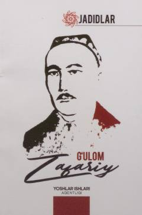

GZTaniqli jadid adibi va jamoat arbobi G'ulom Zafariy hayoti va ijodiy merosi haqida risola.
Ushbu risola o'zbek jadid adabiyotining yorqin namoyandalaridan biri G'ulom Zafariy hayoti va ijodiga bag'ishlangan. Asarda uning dramaturgiya, musiqa, teatr va ma'rifatparvarlik yo'lidagi faoliyati atroflicha yoritib berilgan. Risola keng kitobxonlar ommasi uchun mo'ljallangan.